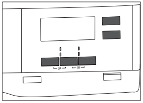

6. ОПЦИИ
6.1 Суха плюс
-
Тази опция помага за постигане на
желаната степен на сушене. Опции за
избор:
-
Степен – готовност за
гладене сухо за гладене.
-
Степен – готовност за
прибиране – сухо за прибиране –
опцията по подразбиране, свързана с
програмата.
-
Степен – готовност за
прибиране сухо за прибиране +.
-
Степен – готовност за
прибиране – съвсем сухо.
-
За памук, синтетика и смесено пране.
Позволява на потребителя да зададе
време за сушене от минимум 10 мин.
до максимум 2 часа (на стъпки по 10
мин.). Когато тази опция е зададена на
максимум, индикаторът за зареждане
изчезва.
-
Опцията, приложима за програмата
Вълна за настройване на
окончателното ниво на сушене за
повече или по-малко сушене.
-
 Позволява отлагане на
Позволява отлагане на
стартирането на програма
за изсушаване от минимум
30 минути до максимум 20
часа.
-
Уредът работи при ниски нива на шум,
без това да се отразява на качеството
на изсушаване. Уредът работи бавно с
по-дълго време на цикъла.
-
Тази опция е включена по
подразбиране при всички програми.
Консумацията на енергия е на
минималното ниво.
-
Удължава до 120 мин. фазата против
намачкване (30 минути) в края на
цикъла на сушене. След фазата на
сушене, за да предпази от
намачкване, барабана се върти от
време на време. Прането може да се
извади по време на фазата против
намачкване.
-
1. Изберете програмата за сушене и
опциите.
-
2. Докосвайте бутона Отложен
старт многократно.
Времето за отлагане е на дисплея
(напр. ако програмата ще
започне след 12 часа.)
-
3. За да активирате опцията
Отложен старт, докоснете бутона
Старт / Пауза.
Времето за стартиране на дисплея се
намалява.
-
Прозвучава звуков сигнал при:
• края на цикъла
• началото и края на фазата против
намачкване
Опцията за сирена е винаги включена
по подразбиране. Можете да
използвате тази опция, за да
активирате или да деактивирате звука.
breakroll
breakroll
breakroll
breakroll
7. Преди първоначална употреба
-
Транспортните болтове,
прикрепени към задната
част на барабан, се
отстранява автоматично
при първото активиране на
сушилнята. Възможно е да
чуете шум.
Какво да правим при използване за
първи път:
• Почистете барабана на сушилнята
с навлажнена кърпа.
-
• Започнете едночасова програма с
влажно пране.
При започване на цикъла
на сушене (първите 3 - 5
мин.) нивото на шума може
да е малко по-високо. Това
е заради стартирането на
компресора. Това е
нормално за уреди с
компресор, като
хладилници или фризери.
8. Всекидневна употреба
8.1 Подготовка на прането
-
Закопчайте циповете.
-
Закопчайте коланите и пликовете
на юрганите.
-
Обърнете наопаки дрехи с
вътрешен слой от памук.
Памучният слой трябва да гледа
навън.
-
Винаги задавайте подходяща
програма за типа пране.
-
Не поставяйте заедно светли и
тъмни дрехи.
-
Използвайте подходяща програма
за памук, пуловери и плетива, за да
намалите намачкването.
-
Не надвишавайте максималното
количество, описано в главата
Програми, или показано на
дисплея.
-
Не сушете връзки или панделки
развързани (напр.връзки на
престилки). Завържете ги преди
началото на програмата.
-
Извадете всички предмети от
джобовете.
-
Сушете само пране, подходящо за
барабанно сушене. Вижте етикета
върху всяка дреха.
-
Не сушете големи и малки артикули
заедно. Малките артикули може да
се заклещят в големите и да
останат мокри.
breakroll
breakroll
breakroll
breakroll
breakroll
breakroll
breakroll
breakroll
breakroll
8.2 Зареждане на прането
-
ПРЕДУПРЕЖДЕНИЕ!
Уверете се, че между
вратичката на уреда и
гуменото уплътнение няма
затиснато пране.
1. Отворете вратичката на уреда с
дърпане.
2. Заредете прането дреха по дреха.
3. Затворете вратичката на уреда.
-
Използвайте бутона за програми, за
да зададете програма.
Възможното време за завършване на
програмата се появява на дисплея.
Времето за сушене, което
виждате на дисплея,
когато бъде избрана
програмата за памук, е
свързано със зареждане от
5 кг и стандартни условия.
Реалното време за сушене
ще зависи от вида
зареждане (количество и
състав), температурата в
помещението и
влажността на прането
след фазата на
центрофугиране.
-
Заедно с програмата, на която може
да зададете 1 или повече специални
опции.

За да активирате или деактивирате
дадена опция, докоснете съответния
бутон или комбинация от два бутона.
-
Натиснете бутона "O" (изключване).
Ако уредът е включен, някои
индикатори се появяват на дисплея.
-
За да се намали потреблението на
енергия, функцията Auto Off (Авт.
изкл.) изключва автоматично уреда:
• сензорният бутон Старт /
Пауза не е бил докоснат в рамките
на 5 минути.
• 5 минути след края на цикълa.
Натиснете бутона "O" (изключване)
за включване на уреда.
Ако уредът е включен, някои
индикации се появяват на дисплея.
-
Заключването за деца може да се
активира, за да попречи на деца да си
играят с уреда. Опцията „Защита за
деца“ заключва всички сензорни
бутони и бутона за програмата (тази
опция не заключва бутона "O"
(изключване)).
Можете да активирате опцията за
защита за деца:
• преди да докоснете бутона
Старт / Пауза, уредът няма да
може да стартира
• след като докоснете бутона
Старт / Пауза, програмите и
опциите вече не са налични.
Активиране на опцията за
защита за деца:
1. Включете сушилнята.
2. Изберете 1 от наличните
програми.
3. Докоснете и задръжте 2 бутона по
едно и също време.
На дисплея се появява символът .
4. За да деактивирате заключването
за деца, отново докоснете горните
бутони, докато символът изчезне.
Ако цикълът на сушене приключи, на
дисплея се появява символът . Ако
опцията Сирена е включена,
прозвучава прекъсващ звуков сигнал в
продължение на 1 минута.
Ако не изключите уреда, се
включва фазата против
намачкване (не е активна с
всички програми).
Мигащият символ
указва, че фазата против
намачкване работи.
Прането може да се
извади по време на тази
фаза.
За да извадите прането:
1. Натиснете бутона "O"
(изключване) за 2 секунди, за да
изключите уреда.
2. Отворете вратичката на уреда.
3. Извадете прането.
4. Затворете вратичката на уреда.
breakroll
breakroll
breakroll
breakroll
breakroll